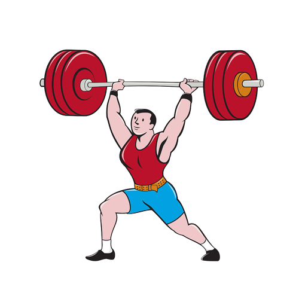
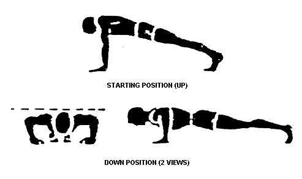
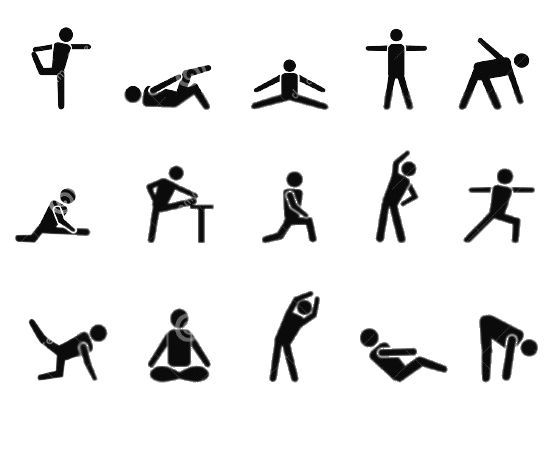
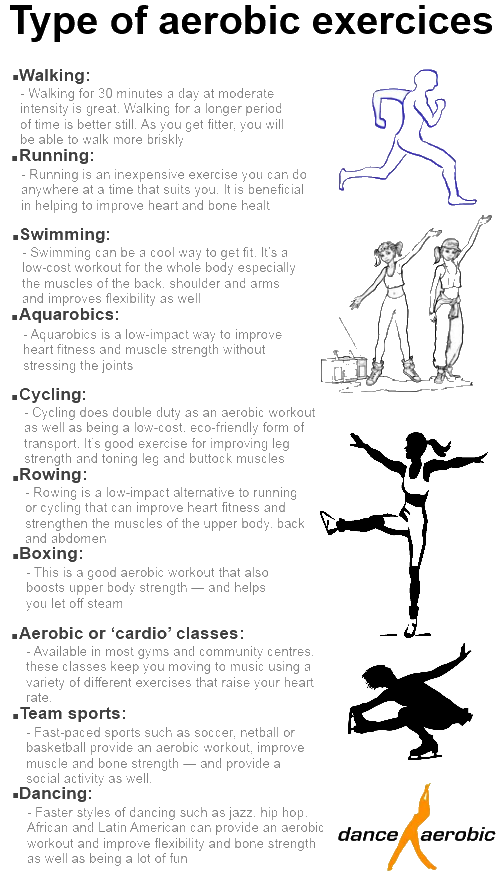
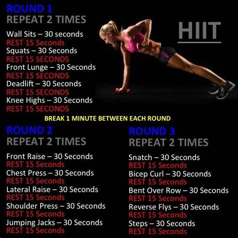

Physical activity has significant health benefits for hearts, bodies and minds.
It contributes to preventing and managing noncommunicable diseases such as
cardiovascular diseases, cancer and diabetes.
Physical activity reduces symptoms of depression and anxiety and enhances
thinking, learning, and judgment skills.
Being physically active can improve your brain health, help manage weight, reduce
the risk of disease, strengthen bones and muscles, and improve your ability to do
everyday activities
Regular physical activity is one of the most important things you can do for your health
You can exercise at home without any equipment by practicing yoga poses and
strength training exercises that use your body weight for resistance.
Some examples of bodyweight exercises you can do at home include squats, push-ups, lunges,
planks, and jumping jacks.
Here’s a beginner routine you can try at home:
Bodyweight squats: 20 reps
Push-ups: 10 reps
Walking lunges: 10 each leg
Plank: 15 seconds
Jumping Jacks: 30 reps 2
Strength Training
Strength training involves lifting weights or using resistance bands to
build muscle and strength. It can help improve bone density,
reduce the risk of osteoporosis, and increase metabolism.
Strength training can also improve balance and reduce the risk of falls in older adults.

Push-ups
Push-ups are a great exercise that can help build upper body strength and tone several muscles
including the chest,shoulders, triceps, and core. Here are the steps to perform a proper push-up:
Begin in a plank position with your hands slightly wider than shoulder-width apart and your feet hip-width apart.
Your body should be in a straight line from your head to your heels.
Lower your body down towards the ground by bending your elbows. Keep your body straight and your core engaged.
When your chest is just above the ground, push yourself back up to the starting position by extending your arms.
Repeat for a desired number of repetitions.
Here are some tips to keep in mind while performing push-ups:
Keep your elbows close to your sides as you lower your body down towards the ground.
This will help target your triceps and prevent strain on your shoulders.
Keep your core engaged throughout the exercise to maintain proper form and protect your lower back.
If you are unable to perform a full push-up, you can modify the exercise by performing push-ups
from your knees instead of your feet.
To make the exercise more challenging, you can perform push-ups with your hands elevated on a bench or step,
or with your feet elevated on a bench or stability ball.
It's important to listen to your body and not push yourself too hard. If you experience any pain or discomfort,
stop the exercise and consult with a healthcare provider.

Flexibility training
Flexibility training includes exercises that stretch your muscles and improve
joint range of motion. Examples include yoga, stretching, or Pilates.
Flexibility training can help improve posture, reduce the risk of injury,
and improve athletic performance.

Aerobic exercise
Aerobic exercise, also known as cardio, is any exercise that increases your heart
rate and breathing rate. Examples include brisk walking, running, cycling, swimming, or dancing.
Aerobic exercise can help improve cardiovascular health, lower blood pressure, and reduce the risk
of chronic diseases such as heart disease, diabetes, and certain types of cancer.

High-Intensity Interval Training (HIIT)
HIIT involves short bursts of intense exercise
followed by periods of rest or low-intensity exercise. HIIT workouts can help improve cardiovascular
health, increase metabolism, and promote fat loss.
